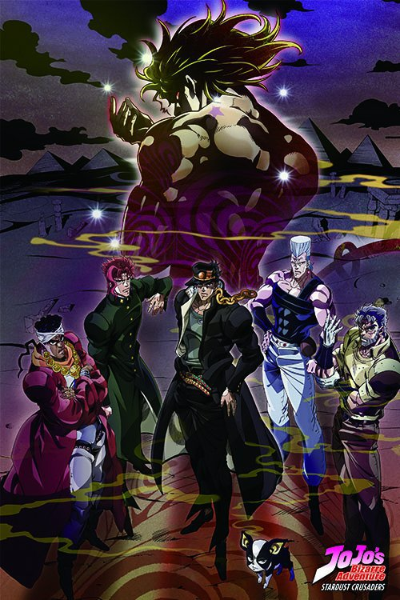

A MARCA DE NASCENÇA EM FORMA DE ESTRELA
Artigo principal: Jotaro Kujo (Arco de História)
Artigo principal: Noriaki Kakyoin (Arco da História)
Caixão de DIO encontrado por caçadores de tesouros
Em 1983, perto das Ilhas Canárias, um trio de caçadores de tesouros trouxe à tona, ao entardecer, um caixão com a inscrição " DIO ". Quando o navio foi encontrado dias depois, restava apenas o caixão vazio.
O "espírito maligno" de Jotaro
A história começa em 1988, em Tóquio, Japão, com Holy Kujo , filha de Joseph Joestar , visitando seu filho Jotaro Kujo após descobrir que ele está preso por ter agredido quatro pessoas. No entanto, Holy foi chamada porque Jotaro se recusa a sair da cela, alegando estar possuído por um espírito maligno . Como ninguém acredita nele, Jotaro rouba uma arma e demonstra seu poder ao impedi-lo de atirar na própria cabeça. Somente Holy consegue ver o "espírito", enquanto Jotaro reafirma sua intenção de permanecer na cela para o bem de todos.
Jotaro e seu "espírito maligno"
Holy liga para seu pai distante , que viaja para o Japão e chega ao aeroporto com Holy e seu companheiro vidente, Muhammad Avdol . Na delegacia, ele ordena que Avdol force Jotaro a sair de sua cela a qualquer custo. Durante a luta entre o "espírito" de Jotaro e o Magician's Red de Avdol , Jotaro descobre com Joseph que o espírito que possui é, na verdade, uma manifestação de sua força vital, chamada Stand . O Stand de Jotaro leva a melhor, mas ele consegue sair da cela, o que leva Avdol a encerrar a batalha.
Joseph exibe seu Stand, Hermit Purple , que lhe permite tirar fotos de lugares distantes, enquanto ele e Avdol explicam que os Stands se manifestam nos descendentes daqueles que os possuem. Joseph afirma que o motivo pelo qual ele e Jotaro ganharam Stands é o reaparecimento de DIO . Sabendo apenas o que sua avó Erina lhe contou, Joseph explica que DIO conseguiu enxertar sua cabeça no corpo de Jonathan Joestar , o que criou uma ligação entre DIO e os descendentes de Jonathan. Embora Joseph tente recrutar seu neto contra o vampiro que há muito o ilude, Jotaro mal acredita em sua história e nas provas apresentadas.
Noriaki Kakyoin
No dia seguinte, Jotaro vai para o colégio e é seguido por um aluno transferido chamado Noriaki Kakyoin . Revelando-se como um assassino enviado por DIO para matar aqueles da linhagem Joestar, Kakyoin usa seu Stand, Hierophant Green, para atacar Jotaro. Mas o Stand de Jotaro facilmente domina Kakyoin, que é levado para a residência Kujo, onde se revela que ele sofreu lavagem cerebral por um esporo parasita produzido por DIO. Jotaro arrisca a própria vida para extrair o Broto de Carne e salva Kakyoin.
A tragédia acontece no dia seguinte, quando Holy adoece devido à manifestação de seu próprio Stand, influenciado por DIO. Sem a força de vontade que seu filho e seu pai possuem, Holy está sendo lentamente morta por seu próprio Stand. Joseph e Avdol determinam que Holy morrerá em cinquenta dias, a menos que matem DIO para quebrar sua influência.
O grupo parte.
Motivado pela condição de sua mãe, Jotaro usa a visão aguçada de seu Stand para analisar a foto que o Stand de Joseph tirou de DIO e faz com que ele desenhe o que consegue ver: uma mosca, que Avdol confirma ser nativa do Egito. Kakyoin se junta ao grupo e Holy fica sob os cuidados de médicos da Fundação Speedwagon . Antes do grupo de Jotaro partir para o aeroporto, Avdol nomeia o Stand de Jotaro como Star Platinum.
EM HONG KONG
Artigo principal: Torre de Cinza (Arco da História)
Artigo principal: Silver Chariot (Arco da História)
Torre Cinza atacando o grupo de Jotaro.
Em um avião a jato com destino ao Egito, o grupo é emboscado pelo Stand insetoide Tower of Gray. Avdol explica que o Stand inimigo pertence a outro dos assassinos de DIO, um serial killer que causa inúmeras mortes relacionadas a transportes, que aparentam ser acidentes. Embora Hierophant Green consiga emboscar o Stand e destruí-lo em segurança, seu usuário, Gray Fly, já havia matado os pilotos. O avião cai no mar perto de Hong Kong.
Polnareff e Silver Chariot.
Enquanto jantavam em um restaurante chinês em Hong Kong, o grupo decidiu viajar por terra e mar para minimizar o risco para as pessoas que os aguardavam no Egito e evitar possíveis ataques de assassinos. Nesse momento, um francês chamado Jean Pierre Polnareff se revela como um dos capangas de DIO e desafia Avdol para um duelo. O Stand de Polnareff, Silver Chariot, supera o Magician's Red de Avdol. Avdol consegue derrotar Polnareff e poupa sua vida quando este escolhe morrer com honra em vez de cometer suicídio ou matar Avdol pelas costas. Polnareff também revela estar sob a influência de um dos Flesh Buds de DIO, extraído por Jotaro. Mais tarde, Polnareff explica que está caçando o usuário de Stand que assassinou sua irmã Chérie e se junta ao grupo na esperança de que seu alvo esteja com DIO.
COM DESTINO A SINGAPURA
Artigo principal: Lua Azul Escura (Arco da História)
Artigo principal: Força (Arco Narrativo)
Artigo principal: Diabo (Arco da História)
Artigo principal: Temperança Amarela (Arco da História)
Jotaro e a garota clandestina com Dark Blue Moon embaixo deles.
Joseph providencia para que um navio tripulado por pessoal aprovado pela Fundação Speedwagon parta rumo a Singapura, mas o grupo encontra uma clandestina antes de ser atacado pelo Stand aquático Dark Blue Moon . O assassino se revela um seguidor de DIO que assassinou o Capitão Tennille e assumiu sua identidade. Embora o assassino e seu Stand tivessem a vantagem no meio do mar, após arrastarem Jotaro para as profundezas, Jotaro consegue desferir um golpe decisivo contra o Stand e derrotar o impostor. Contudo, o grupo descobre tarde demais que o navio estava repleto de bombas e é forçado a entrar nos botes salva-vidas.
Jotaro encarando o Eterno.
O grupo e os tripulantes sobreviventes vagam por algum tempo antes de encontrarem um cargueiro, onde encontram apenas um orangotango , enquanto a tripulação é dizimada por acidentes bizarros. Ao perceberem que estão sendo atacados, Jotaro salva a garota clandestina de ser molestada pelo orangotango, que se revela ser o usuário do Stand, com todo o navio como um Stand. O orangotango consegue aprisionar todos, mas Jotaro derrota o usuário do Stand inimigo em combate corpo a corpo. Com o orangotango derrotado, o grupo retorna ao bote salva-vidas enquanto o cargueiro começa a afundar. Eles finalmente chegam a Singapura.
Carruagem de Prata contra Diabo de Ébano.
Enquanto o grupo se hospeda em um hotel para um breve descanso, Polnareff é emboscado por Devo, o Amaldiçoado, a quem ele consegue ferir. No entanto, ao tentar contatar seus companheiros, Polnareff se vê dominado pelo Stand de Devo, Ebony Devil, após este ter entrado em uma boneca. Cego, Polnareff quebra o espelho do quarto para ver a boneca e a esfaqueia repetidamente, matando Devo. Mais tarde, enquanto Jotaro e Kakyoin decidem dar um passeio com a garota clandestina, Joseph e Avdol resolvem espionar DIO usando a televisão do quarto. Mas Joseph recebe um aviso de que Kakyoin é um traidor, incapaz de decifrar o significado, enquanto DIO o detecta psiquicamente e faz a TV explodir.
Jotaro espancando Rubber Soul impiedosamente.
Mas, como Jotaro deduziu de seu comportamento estranho, "Kakyoin" é na verdade Rubber Soul usando o poder de seu Stand, Yellow Temperance . Embora Jotaro esteja em desvantagem devido à incapacidade de Star Platinum de danificar o Yellow Temperance, que se assemelha a um arremesso, ele pula no oceano abaixo do teleférico e força Rubber Soul a desativar seu Stand para respirar e atacar. Rubber Soul é completamente espancado enquanto revela que alguns dos assassinos possuem os Stands representados por Death , Emperor , Hanged Man e Empress . O usuário do Stand Hanged Man é revelado como sendo o assassino de Chérie Polnareff e usa espelhos para atacar. Depois, o grupo pega um trem que viaja por toda a Malásia, Tailândia e Mianmar até chegar a Calcutá.
NA ÍNDIA
Artigo principal: Imperador e o Enforcado (Arco da História)
Artigo principal: Imperatriz (Arco da História)
Artigo principal: Roda da Fortuna (Arco da História)
Onde está o cavalo?
Em Calcutá, Polnareff é abordado e confrontado por J. Geil , usuário do Stand Enforcado , que o provoca de dentro de um espelho antes de fugir. Ansioso para perseguir seu inimigo apesar do conselho de Avdol, Polnareff começa a lutar com o vidente e foge sozinho. Mas acaba encontrando Hol Horse , parceiro de Geil e usuário do Stand de arma chamado Imperador . A luta que se segue leva à morte de Avdol pelas mãos dos dois usuários de Stand, enquanto Kakyoin chega para ajudar Polnareff. Os dois são forçados a fugir com o Stand Enforcado em perseguição, e Polnareff percebe a natureza do Stand como um ser de luz que se move entre superfícies refletoras. Ele prende o Stand em seu olho e o fere, revelando que Geil está por perto.
Embora Geil atraia a dupla para uma armadilha e reúna um grupo de mendigos, Kakyoin os faz se concentrarem em uma moeda brilhante e a joga para o alto. Polnareff então cega o mendigo com o Hanged Man no olho e força o Stand a se manifestar, derrotando-o com um golpe. Polnareff vinga Chérie ao matar Geil, cuja morte é pressentida por sua mãe, Enya, a Bruxa . Hol Horse chega tarde demais para saber da morte de Geil, escapando do grupo Joestar reunido apenas graças à intervenção de uma bela índia chamada Nena , a quem ele seduziu anteriormente. Jotaro e Joseph dizem a Polnareff que já enterraram Avdol e que devem seguir em frente.
José destruindo o Stand da Imperatriz.
A caminho de Benares, acompanhado por Nena, Joseph percebe um furúnculo no braço enquanto se dirige a uma clínica com Polnareff para tratá-lo. Mas o furúnculo acaba sendo o Stand da Imperatriz , que matou o médico para incriminar Joseph pelo assassinato, enquanto Nena distrai Polnareff para impedi-lo de ajudar Joseph a escapar da polícia. Embora a Imperatriz cresça o suficiente para ameaçar fisicamente Joseph, o velho usa seu Hermit Purple para encontrar um barril de alcatrão de carvão e usá-lo para imobilizar o Stand e matá-lo. Isso mata Nena como consequência, revelando que ela é uma mulher baixa e obesa usando a pele de uma mulher que ela assassinou anteriormente. O grupo então deixa Benares e continua para o oeste.
A caminho do Paquistão, o grupo reencontra a garota clandestina e a leva consigo. No entanto, um misterioso motorista os persegue e os leva até um penhasco onde os embosca. O carro do inimigo revela-se ser o Stand deles, Roda da Fortuna , que luta contra Jotaro. Roda da Fortuna espirra gasolina em Jotaro e o incendeia. Aparentemente, o protagonista morre, mas, na verdade, apenas seu casaco queima; Jotaro cavou um túnel para se aproximar do carro sem ser detectado e o destrói, expondo seu usuário, ZZ . O grupo o amarra a uma rocha e o abandona. Depois de deixar a garota clandestina em um avião com destino a Hong Kong, o Grupo Joestar chega ao Paquistão.
VIAGEM PELO ORIENTE MÉDIO
PAQUISTÃO
Artigo principal: Justiça (Arco Narrativo)
Artigo principal: Amantes (Arco da História)
A morte de Enya.
A caminho de Karachi, a viagem é prejudicada por um denso nevoeiro e eles encontram uma cidade habitada por pessoas estranhamente hostis. Enya Geil aparece, fingindo ser uma gentil dona de hotel, e convence o grupo a passar a noite em seu estabelecimento para que ela possa pessoalmente matar o Grupo Joestar e vingar seu filho. Enya também tenta matar Hol Horse por seu papel na morte de seu filho antes de atacar Polnareff com os zumbis animados por seu Stand, Justice . Mas Jotaro intervém e faz com que Star Platinum inale Justice para nocautear Enya, revelando que a cidade é um cemitério enquanto Hol Horse foge novamente.
Quando o Grupo Joestar chega a Karachi, eles são impotentes para impedir que Enya seja executada por Steely Dan, que ativa um esporo implantado por DIO em seu cérebro para impedi-la de revelar o Stand de seu mestre . Apesar de ter sido traída, Enya morre recusando-se a ajudar o grupo Joestar.
Star Platinum atacando Steely Dan.
Steely Dan então revela seu Stand Lovers , que pode se tornar microscópico para entrar no cérebro de alguém. Ele envia Lovers para o cérebro de Joseph para plantar mais esporos de DIO e mantê-lo como refém, forçando Jotaro a se tornar seu servo pessoal. Felizmente, ao encolherem seus Stands a um tamanho microscópico, Polnareff e Kakyoin conseguem expulsar Lovers de Joseph. Enquanto isso, Jotaro percebe que Steely Dan está ferido e o ameaça com uma surra. Steely Dan tenta primeiro entrar no cérebro de Jotaro e depois na cabeça de uma garotinha para fazê-la refém, mas Star Platinum frustra ambas as tentativas. Jotaro retribui a humilhação com uma longa surra.
ARÁBIA
Artigo principal: Sol (Arco da História)
Artigo principal: Morte Treze (Arco da História)
O Grupo Joestar se protege do Sol.
Após o grupo chegar aos Emirados Árabes Unidos, eles atravessam o deserto em camelos antes de serem atacados por um Stand na forma do Sol . Ele dispara poderosas rajadas de energia sobre o grupo, forçando-os a se esconderem sob uma pedra. A longa espera sob o calor escaldante se mostra insuportável, e Joseph observa horrorizado enquanto seus companheiros começam a rir loucamente. Na verdade, eles avistaram o usuário do Stand escondido atrás de um espelho e o derrotam com uma pequena pedra.
Naquela noite, Kakyoin se vê preso em um parque temático de pesadelo onde Death Thirteen o ataca. No entanto, Polnareff o acorda; Kakyoin, de alguma forma, esquece completamente do sonho.
O grupo compra um Cessna para atravessar o deserto e acaba levando um bebê. Kakyoin e Polnareff cochilam e são atacados novamente por Death Thirteen em seu sonho compartilhado. Eles percebem, horrorizados, que não conseguem invocar seus Stands para se defenderem. Kakyoin pega uma faca e grava as palavras "Stand bebê" em seus braços, debatendo-se com tanta violência que a frase se manifesta no mundo real, e sua agitação acaba causando um acidente.
O grupo monta acampamento para passar a noite, enquanto o bebê espera ansiosamente para ser libertado e matá-los. Kakyoin suspeita, com razão, do bebê, mas apenas convence seus companheiros de que ele está delirando. Quando ele invoca Hierophant Green para atacar o bebê, Polnareff o nocauteia. Todos adormecem e se veem no sonho, incapazes de lutar contra Death XIII. Felizmente, o fato de Kakyoin estar inconsciente com seu Stand ainda invocado permitiu que ele o mantivesse no sonho, e Hierophant Green consegue derrotar o Stand inimigo. Todos finalmente acordam, tendo esquecido o sonho, exceto Kakyoin, que intimida o bebê para que os deixe em paz, recolhendo algumas fezes de sua fralda e misturando-as em sua papinha.
O MAR VERMELHO
Artigo principal: Julgamento (Arco Narrativo)
Artigo principal: Alta Sacerdotisa (Arco da História)
Em uma ilha no Mar Vermelho, o grupo encontra o pai de Muhammad Avdol , que não quer vê-los devido à morte do filho. Depois, Polnareff vagueia sozinho e encontra uma lamparina árabe. Esfregando-a, o francês invoca o Judgment e se convence de ter encontrado um gênio de verdade. Ele deseja que sua irmã Chérie e Avdol voltem à vida, mas é atacado pelos zumbis deles. No entanto, o verdadeiro Avdol se revela e intervém, destruindo os mortos-vivos – que se revelam ser esculturas de argila do Judgment – e derrotando o Stand inimigo. Avdol então descobre o usuário do Judgment e o derrota.
Quando Polnareff se reúne com o grupo, descobre que Avdol apenas fingiu a própria morte e que todos esconderam a verdade dele por medo de que ele a revelasse a um inimigo. Livre para agir, Avdol revela a existência de um submarino, no qual o grupo embarca para entrar no Egito sem ser notado.
Após 30 dias e muitas batalhas, os heróis finalmente pisaram em solo egípcio.
Artigo principal: "Khnum" Oingo e "Tohth" Boingo (Arco da História)
Artigo principal: Anúbis (Arco da História)
Artigo principal: "Bastet" Mariah (Arco da História)
Artigo principal: "Sethan" Alessi (Arco da História)
Ao chegarem em Abu Simbel, os heróis compram um carro e param perto de algumas ruínas no deserto. Lá, encontram agentes da Fundação Speedwagon que fornecem suprimentos ao grupo. Além disso, trazem Iggy , um Boston Terrier e usuário de The Fool , um Stand feito de areia. Por fim, descobrem a existência de outros nove usuários de Stand que aguardam o Grupo Joestar no país.
Por coincidência, N'Doul embosca o grupo no deserto com Geb , um Stand de água. Ele não só consegue se esconder sob a areia e atacar de qualquer lugar, como seu usuário está a quilômetros de distância. Os olhos de Kakyoin são cortados e a garganta de Avdol é cortada, eliminando ambos. Jotaro força Iggy a ajudar, pois ele consegue sentir os ataques, mas o cachorro tenta fugir criando um planador de areia. Jotaro aproveita a situação para se aproximar de N'Doul e desferir um soco decisivo, derrotando-o.
Quando o Grupo Joestar chega a Aswan, Oingo e Boingo , usuários do Stand Khnum (que altera a aparência) e da história em quadrinhos Tohth (que prevê o futuro ), respectivamente, tentam assassinar os heróis. Inicialmente, Boingo prevê que Joseph, Jotaro e Polnareff beberão veneno e se infiltrarão em um café para onde o grupo está indo. Embora todos tomem seus chás envenenados, Iggy causa um alvoroço, fazendo com que todos cuspam o veneno.
Boingo prevê que a cabeça de Jotaro será explodida por uma bomba. Oingo tenta plantar uma bomba escondida dentro de uma laranja no carro do grupo, mas é surpreendido por Joseph e Polnareff. Ele é forçado a imitar Jotaro, levando a bomba consigo na viagem. Já prevendo o pior, Oingo tenta se livrar da bomba e escapar de Joseph e Polnareff, mas os eventos conspiram para mantê-lo preso. Quando consegue fugir, ele acidentalmente aciona sua própria bomba e é levado para o hospital. Oingo e Boingo são derrotados sem serem notados.
Enquanto o Grupo Joestar navega pelo Nilo, Anubis , uma espada habitada por um Stand, possui um fazendeiro chamado Chaka . Ela o controla mentalmente, fazendo-o empunhá-la para matar os heróis. No Templo de Kom Ombo, Chaka luta contra Polnareff e, embora Silver Chariot seja mais fraco, revela uma técnica secreta. O Stand dispara sua espada e derrota Chaka, então Polnareff leva Anubis consigo, sem saber de sua verdadeira natureza.
Em Edfu, Polnareff e Jotaro vão a um barbeiro chamado Khan para fazer a barba. Khan é possuído e derrota Polnareff facilmente devido ao seu poder de memorizar as técnicas do inimigo. Jotaro intervém e derrota Khan com dificuldade, mas a situação piora quando Polnareff também é possuído. Star Platinum é dominado pela combinação de Anubis e Silver Chariot, e Polnareff apunhala Jotaro no estômago com Anubis. Com a espada cravada em seu estômago, Jotaro consegue quebrá-la em vários pedaços e vence. Uma última tentativa de assassinato por Anubis é frustrada por Iggy, e Anubis é jogado no Nilo.
Em Luxor, Joseph descobre uma tomada elétrica saindo de uma rocha e leva um choque. Na verdade, trata-se de Bastet , o Stand de Mariah , uma das nove Deusas da Glória do Egito . Joseph é magnetizado e começa a atrair todo tipo de objeto metálico. Ele e Avdol descobrem e perseguem Mariah, mas Avdol também foi magnetizado. A perseguição se torna ainda mais difícil porque a dupla se atrai mutuamente e atrai outros objetos, mas eles conseguem cercar Mariah. Joseph e Avdol, cobertos por uma miríade de itens metálicos, então voltam Bastet contra seu usuário e esmagam Mariah ao se lançarem um contra o outro.
Enquanto isso, Jotaro e Polnareff são perseguidos por Alessi , o próximo assassino de DIO . Polnareff percebe Alessi o seguindo e o confronta sozinho. No entanto, o Sethan de Alessi reduz Polnareff e Silver Chariot a crianças. Polnareff foge e é acolhido por uma mulher gentil que o leva para sua casa. Alessi então ataca Polnareff novamente, e a criança se vê presa em um quarto sem saída, com Alessi batendo na porta.
Quando Alessi entra na sala, Polnareff o embosca de um esconderijo astuto e o força a pular por uma janela. Ele então encontra Jotaro e o transforma em criança também, mas Jotaro ainda o derrota facilmente. Jotaro e Polnareff voltam à forma adulta e finalizam Alessi.
ATIRANDO EM DIO?!
Artigo principal: Atirando em DIO?!
Hol Horse se reporta a DIO em seu covil. DIO revela uma pequena parte de sua habilidade quando Hol Horse tenta atirar nele pelas costas, assustando o cowboy a ponto de fazê-lo enfrentar os Joestars pela terceira vez.
CAIRO
Artigo principal: D'Arby, o Jogador (Arco da História)
Artigo principal: Hol Horse e Boingo (Arco da História)
Artigo principal: O Guardião do Inferno, Pet Shop (Arco de História)
Os heróis contemplam a cidade do Cairo.
Após lutarem por todo o Egito, o Grupo Joestar finalmente chegou ao Cairo. Nos arredores da extensa cidade, o grupo encontra Daniel J. D'Arby , que oferece informações sobre a localização de DIO em troca de uma aposta. Ele se revela como um dos Deuses da Glória do Egito 9 quando vence uma aposta contra Polnareff e seu Osíris rouba a alma do francês.
Os heróis são forçados a apostar suas almas e Joseph perde uma segunda partida, tendo sua alma roubada por Osíris. Jotaro desafia D'Arby para uma partida de pôquer e, apesar de D'Arby ter manipulado todo o bar a seu favor, perde quando Jotaro, confiante, aposta as almas de todo o grupo, além da sua própria mãe, Holy . Provocado a apostar informações sobre o Stand de DIO, D'Arby entra em pânico. Ele desiste, liberando todas as suas almas roubadas, e enlouquece.
Hol Horse retorna de Aswan com Boingo , cujo Tohth pode lhe dar vantagem contra o Grupo Joestar. Ele descobre em primeira mão o potencial de usar a previsão da história em quadrinhos quando salva uma mulher de um escorpião e é recompensado com joias.
A primeira tentativa de Hol Horse é frustrada, mas ele é salvo quando um carro atropela todos. Enquanto os heróis se recuperam, Tohth prevê que Jotaro levará um tiro na cabeça até o meio-dia. Hol Horse atira antecipadamente e Jotaro, por acidente, desvia das balas do Imperador , que retornam a Hol Horse e atravessam a história em quadrinhos onde os buracos de bala foram desenhados, cumprindo a profecia. Hol Horse é derrotado enquanto Iggy derrota Boingo.
Enquanto o grupo está ocupado procurando pela mansão de DIO , Iggy a descobre por acidente e conhece Pet Shop , um falcão de estimação e usuário do Stand Horus , capaz de lançar gelo.
Uma luta se inicia quando Iggy salva uma criança de Horus, mas o cachorro só consegue fugir do pássaro. Refugiando-se em um esgoto, Iggy é perseguido por Pet Shop, mas consegue acertar um único golpe. Em resposta, Pet Shop libera todo o poder de seu Stand e eventualmente força Iggy a entrar no Nilo, onde constrói uma cúpula de areia para se proteger. Pet Shop ataca Iggy lá dentro, mas morre quando Iggy morde seu bico enquanto ele tenta cuspir um pedaço de gelo. Iggy é então salvo do rio pela criança de antes.
MANSÃO DE DIO
Artigo principal: D'Arby, o Jogador (Arco da História)
Artigo principal: O Miasma do Vazio, Vanilla Ice (Arco da História)
Os heróis descobrem o covil de DIO.
Kakyoin encontra Iggy e se reúne com o resto do grupo Joestar . O cachorro então guia todos até a mansão de DIO . Quando o grupo abre a porta da frente, eles são recebidos por Telence T. D'Arby , irmão mais novo de Daniel J. D'Arby e mordomo da mansão. Seu Stand, Atum , consegue arrastar Jotaro, Joseph e Kakyoin para o interior da mansão. Os três se encontram no quarto de Telence, uma réplica de uma ilha tropical no meio do mar. Telence desafia Kakyoin para uma partida de " F-MEGA " e, após um confronto acirrado, conquista sua alma.
Em seguida, ele joga contra Jotaro em " Oh! Isso é uma bola de beisebol! ". É então que Telence usa secretamente sua habilidade de ler almas e adivinhar as jogadas de Jotaro, levando vantagem. No entanto, a alma de Jotaro contradiz suas jogadas, chocando D'Arby, que não consegue descobrir como Jotaro está trapaceando. Quando perde, libertando Kakyoin, Telence descobre que Joseph estava jogando discretamente no lugar de Jotaro o tempo todo. Jotaro então dá uma surra em Telence.
Enquanto Jotaro, Joseph e Kakyoin saem do quarto de Telence, Vanilla Ice , um dos últimos lacaios de DIO, informa o vampiro sobre a situação deles. DIO ordena que Vanilla Ice se mate e ofereça seu sangue, o que este faz sem questionar. Encorajado por essa demonstração de lealdade, DIO ressuscita Vanilla Ice como um vampiro e o envia contra o Grupo Joestar.
Polnareff, Iggy e Avdol entram na mansão e se encontram em um labirinto ilusório , mas derrotam facilmente o usuário de Stand . Vanilla Ice embosca o grupo e mata Avdol enquanto empurra seus companheiros para fora do caminho. Cream , um Stand capaz de engolir Vanilla Ice e criar um portal para o vazio que desintegra tudo ao seu redor, permanecendo indetectável pelos sentidos, está além do poder de Polnareff e Iggy para ser derrotado.
Os dois fogem para a galeria do segundo andar e tentam emboscar Vanilla Ice usando o Stand de Iggy para imitar DIO com uma estátua de Stand, mas a emboscada falha e Vanilla Ice o chuta repetidamente e violentamente. Polnareff fica incapacitado e Vanilla Ice se esconde novamente dentro de seu Stand. Espalhando areia pela sala, o francês consegue apunhalar a garganta de Ice, mas Ice começa a se transformar em um vampiro e se liberta, ferindo Polnareff.
Imobilizado, Polnareff quase é morto por Cream, mas Iggy usa suas últimas forças para tirá-lo do caminho e morre. Polnareff consegue empurrar Vanilla Ice para a luz do sol e o mata.
SUZI Q JOESTAR VISITA SUA FILHA
Artigo principal: Suzi Q Joestar visita sua filha
Suzi Q chega a Tóquio vinda de Nova York para visitar sua filha. Holy está muito fraca, mas tanto ela quanto Suzi Q confiam que Joseph e Jotaro terão sucesso em sua missão.
O MUNDO DE DIO
Artigo principal: O Mundo de DIO (Arco da História)
DIO e o Mundo.
Jotaro, Joseph e Kakyoin encontram o vampiro Nukesaku , mas o derrotam facilmente.
Polnareff confronta DIO, que finalmente revela seu Stand, The World , mas fica perplexo com os poderes do vampiro. Antes que a luta possa continuar, Jotaro, Joseph e Kakyoin atravessam uma parede externa e fazem DIO recuar para longe da luz do sol. Eles sobem uma torre com Nukesaku a reboque, mas quando chegam ao topo, Nukesaku é instantaneamente despedaçado. Temendo a emboscada de DIO, o Grupo Joestar salta da mansão por uma janela e contempla o crepúsculo com pavor.
O grupo se divide em dois: Kakyoin e Joseph atraem DIO, enquanto Jotaro e Polnareff o seguem. Uma perseguição de carro se inicia entre DIO e Joseph e Kakyoin pelas ruas e telhados do Cairo. Arriscando a própria vida, Kakyoin testa a habilidade de The World. Kakyoin revela o poder de Hierophant Green para atacar DIO por todos os lados, e o vampiro finalmente usa seu poder.
DIO para o fluxo do tempo e, nos cinco "segundos" que lhe são concedidos, faz com que The World atravesse Kakyoin com um soco. Enquanto o vampiro se vangloria, Kakyoin consegue compreender o poder de seu inimigo. Incapaz de falar, ele atira em uma torre do relógio antes de morrer, fazendo Joseph entender a habilidade de The World. DIO persegue Joseph e, no momento em que o velho avisa Jotaro sobre DIO, este para o tempo e lança uma faca em sua garganta. Joseph é esfaqueado e perde a consciência.
Jotaro e Star Platinum enfrentam DIO e The World . Jotaro consegue se mover brevemente durante o tempo parado e chega a ferir DIO. O vampiro se regenera mesmo assim e testa a capacidade de Jotaro de se mover durante a parada no tempo, lançando uma série de facas contra ele. Jotaro é atingido em vários membros e cai no chão.
DIO se aproxima para desferir o golpe final quando Polnareff tenta apunhalá-lo pelas costas, mas DIO não morre e soca Polnareff contra a parede. Para salvar seu companheiro, Jotaro, que fingia estar morto, precisa se mover um pouco para que DIO foque nele. Nos segundos seguintes, DIO tenta descobrir se Jotaro está realmente vivo e pressiona o jovem até o ponto de parar seu próprio coração. No último instante, DIO se convence e se aproxima de Jotaro, mas Star Platinum aparece e desfere um soco devastador na cabeça dele.
DIO está incapacitado, mas atrai Jotaro para que este o soque em direção ao cadáver de Joseph. O vampiro se alimenta do sangue de Joseph e, agora totalmente sincronizado com o corpo de Jonathan Joestar , torna-se mais poderoso a cada segundo. DIO tenta esmagar Jotaro sob um rolo compressor, mas, levado ao seu limite, Jotaro para o tempo. Ele consegue surpreender DIO e esmaga sua perna. No chão, DIO tenta um último ataque inútil, e Star Platinum destrói The World, derrotando DIO de vez.
Jotaro e Joseph contemplando o sacrifício de seus amigos. Após a vitória, Jotaro supervisiona uma transfusão de sangue de DIO para Joseph, revivendo seu avô. Em seguida, eles expõem os restos mortais do vampiro ao sol, desintegrando-o.
Algum tempo depois, Jotaro, Joseph e Polnareff se despedem antes de seguirem caminhos diferentes. Holy finalmente acorda no Japão e aguarda ansiosamente o retorno de seu filho e de seu pai.